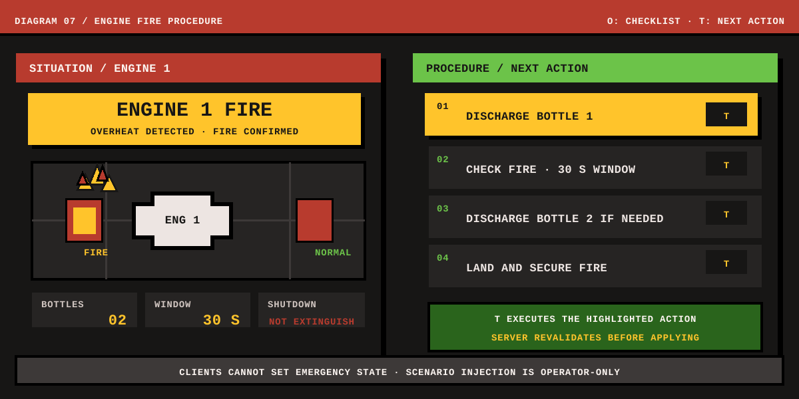

Engine fire
- Targeted to one engine or one Gina engine group.
- Extinguish with one of two bottles.
- Shutting down does not put the fire out.
- A safe landing secures any remaining fire.
Failures are not just red text. Each one has a condition, an explanation, a procedure and a server-validated fix.
Press O to open the emergency checklist. The left panel shows what is happening; the right panel shows what you can do about it. Press T or click EXECUTE NEXT ACTION to carry out the highlighted action. Clients cannot set emergency state directly — the server revalidates every request.
Diagram — the situation panel on the left, the highlighted next action on the right.

The left panel names the condition, target engine or Gina group, and the limits. The right panel holds the procedure; the amber row is what T runs next.
| Fact | Rule |
|---|---|
| BOTTLES | Two extinguisher charges. |
| WINDOW | 30 seconds after ignition. |
| SHUTDOWN | Does not extinguish the fire. |
| AUTHORITY | Server revalidates every action. |
Scenario injection stays operator-only; the client never sets emergency state directly.
The checklist stays readable in flight, with explanations in plain language.
T chooses the first available action in this order:
| Event | Value |
|---|---|
| Overheat before ignition | above 900 for 1200 ticks |
| First damage after ignition | 240 ticks |
| Damage interval | every 80 ticks |
| Extinguisher window | 600 ticks / 30 seconds |
| Catastrophic fire | 1500 ticks |
| Extinguisher bottles | 2 |
Heavy-fuel jettison is only offered when you have a landing emergency and at least 60% fuel. Low fuel alone never recommends jettison. The system stops at a protected 20% landing reserve and locks out at 21% or below.
Operator-only. These commands affect the command sender's own aircraft.
/flightline emergency fire 1|2 — engine fire on target 1 or 2/flightline emergency failure 1|2 — engine failure on target 1 or 2/flightline emergency gear — gear failure/flightline emergency hydraulic — hydraulic failure/flightline emergency cabin — pressurisation failure/flightline emergency fuel — low-fuel emergency/flightline emergency ice — airframe ice/flightline emergency overspeed — overspeed condition/flightline emergency clear — clear active emergency stateOn the Gina, targets 1 and 2 are engine groups of three, not individual engines.